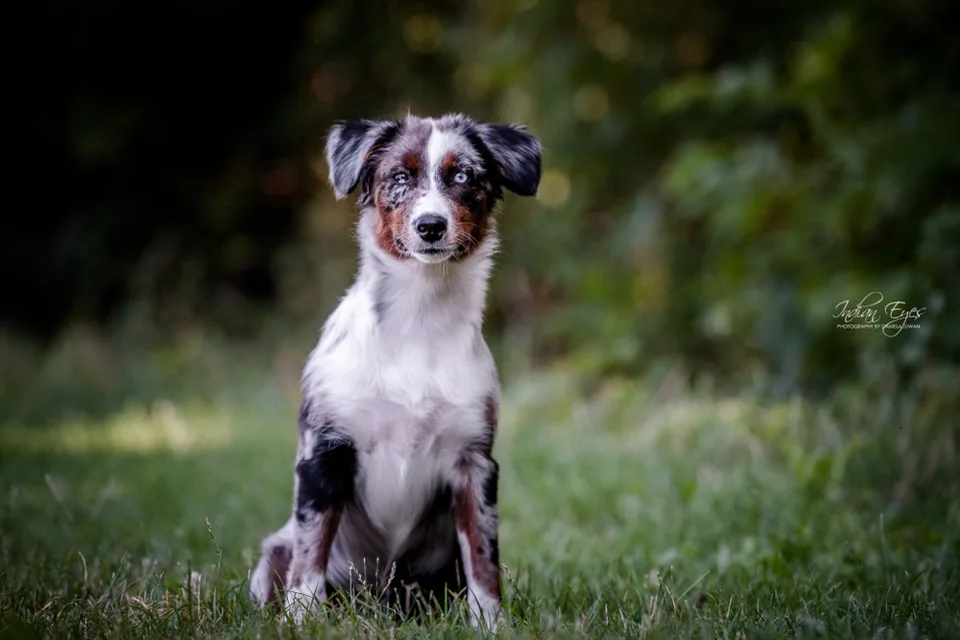

Alles dabei?
Diese Checkliste hilft euch bei der Vorbereitung. Die verbindlichen Voraussetzungen erfährst du vom Trainerteam.
0 von 7 erledigt


Hier treffen wir uns
Hochmühlstraße 34
2514 Traiskirchen
Bitte kläre vor dem Besuch den genauen Treffpunkt, Kursbeginn, Kosten und die Voraussetzungen.
Aktuelle TermineRoute planenMitgliedschaft und KostenWas ihr schon zu Hause üben könnt
Kurze Aufmerksamkeitsspiele, ruhiges Belohnen und lockeres Gehen an der Leine sind ein guter Einstieg. Dein Hund muss vor dem ersten Kurs noch nicht perfekt sein.
Zur digitalen Hundeschule Unverbindlich anfragen